| ISCED level | Education level | Years of schooling |
|---|---|---|
| 1 | Primary | 4 |
| 2 | Lower Secondary | 10 |
| 3 | Upper secondary | 12 |
| 4 | Post-Secondary | 13 |
| 5 | Short-Cycle Tertiary | 14 |
| 6 | Bachelor’s | 16 |
| 7 | Master’s | 18 |
| 8 | Doctoral | 21 |
1 Probability Distribution
1.1 Random Experiment
From an empirical perspective, a dataset is just a fixed array of numbers. Any summary statistic we compute – like a sample mean, sample correlation, or OLS coefficient – is simply a function of these numbers.
These statistics provide a snapshot of the data at hand but do not automatically reveal broader insights about the world. To add deeper meaning to these numbers, identify dependencies, and understand causalities, we must consider how the data were obtained.
A random experiment is an experiment whose outcome cannot be predicted with certainty. In statistical theory, any dataset is viewed as the result of such a random experiment. While individual outcomes are unpredictable, patterns emerge when experiments are repeated.
The gender of the next person you meet, daily fluctuations in stock prices, monthly music streams of your favorite artist, or the annual number of pizzas consumed – all involve a certain amount of randomness and emerge from random experiments. Probability theory gives us the tools to analyze this randomness systematically.
1.2 Random Variables
A random variable is a numerical summary of a random experiment. An outcome is a specific result of a random experiment. The sample space S is the set/collection of all potential outcomes.
Let’s consider some examples:
Coin toss: The outcome of a coin toss can be “heads” or “tails”. This random experiment has a two-element sample space: S = \{heads, tails\}. We can express the experiment as a binary random variable: Y = \begin{cases} 1 & \text{if outcome is heads,} \\ 0 & \text{if outcome is tails.} \end{cases}
Gender: If you conduct a survey and interview a random person to ask them about their gender, the answer may be “female”, “male”, or “diverse”. It is a random experiment since the person to be interviewed is selected randomly. The sample space has three elements: S = \{female, male, diverse\}. To focus on female vs. non-female, we can define the female dummy variable: Y = \begin{cases} 1 & \text{if the person is female,} \\ 0 & \text{if the person is not female.} \end{cases} Similarly, dummy variables for male and diverse can be defined.
Education level: If you ask a random person about their education level according to the ISCED-2011 framework, the outcome may be one of the eight ISCED-2011 levels. We have an eight-element sample space: S = \{Level \ 1, Level \ 2, Level \ 3, Level \ 4, Level \ 5, Level \ 6, Level \ 7, Level \ 8\}.
The eight-element sample space of the education-level random experiment provides a natural ordering. We define the random variable education as the number of years of schooling of the interviewed person, with values corresponding to typical completion times in the German education system: Y = \text{years of schooling} \in \{4, 10, 12, 13, 14, 16, 18, 21\}.
- Wage: If you ask a random person about their income per working hour in EUR, there are infinitely many potential answers. Any (non-negative) real number may be an outcome. The sample space is a continuum of different wage levels. The wage level of the interviewed person is already numerical. The random variable is Y = \text{income per working hour in EUR}.
Random variables share the characteristic that their value is uncertain before conducting a random experiment (e.g., flipping a coin or selecting a random person for an interview). Their value is always a real number and is determined only once the experiment’s outcome is known.
1.3 Events and Probabilities
To quantify the uncertainty in random variables, we need to assign probabilities to different possible outcomes or sets of outcomes. This is where events and probability functions come into play.
An event of a random variable Y is a specific subset of the real line. Any real number defines an event (elementary event), and any open, half-open, or closed interval represents an event as well.
Let’s define some specific events:
Elementary events: A_1 = \{Y=0\}, \quad A_2 = \{Y=1\}, \quad A_3 = \{Y=2.5\}
Half-open events: \begin{align*} A_4 &= \{Y \geq 0\} = \{ Y \in [0,\infty) \} \\ A_5 &= \{ -1 \leq Y < 1 \} = \{ Y \in [-1,1) \} \end{align*}
The probability function P assigns values between 0 and 1 to events. For a fair coin toss (where Y=1 represents heads and Y=0 represents tails), it is natural to assign the following probabilities: P(A_1) = P(Y=0) = 0.5, \quad P(A_2) = P(Y=1) = 0.5
By definition, the coin variable will never take the value 2.5, so we assign P(A_3) = P(Y=2.5) = 0
To assign probabilities to interval events, we check whether the elementary events \{Y=0\} and/or \{Y=1\} are subsets of the event of interest:
- If both \{Y=0\} and \{Y=1\} are contained in the event of interest, the probability is 1
- If only one of them is contained, the probability is 0.5
- If neither is contained, the probability is 0
For our examples: P(A_4) = P(Y \geq 0) = 1, \quad P(A_5) = P(-1 \leq Y < 1) = 0.5
Every event has a complementary event (denoted with superscript c), which consists of all outcomes not in the original event. For any pair of events, we can also take the union (denoted by \cup) and intersection (denoted by \cap). Let’s define further events:
Complement (all outcomes not in the original event): A_6 = A_4^c = \{Y \geq 0\}^c = \{Y < 0\} = \{Y \in (-\infty, 0)\}
Union (outcomes in either event): A_7 = A_1 \cup A_6 = \{Y=0\} \cup \{Y< 0\} = \{Y \leq 0\}
Intersection (outcomes in both events): A_8 = A_4 \cap A_5 = \{Y \geq 0\} \cap \{-1 \leq Y < 1\} = \{0 \leq Y < 1\}
Combinations of multiple events: \begin{align*} A_9 &= A_1 \cup A_2 \cup A_3 \cup A_5 \cup A_6 \cup A_7 \cup A_8 \\ &= \{Y \in (-\infty, 1] \cup \{2.5\}\} \end{align*}
Certain event (contains all possible outcomes): A_{10} = A_9 \cup A_9^c = \{Y \in (-\infty, \infty)\} = \{Y \in \mathbb{R}\}
Empty event (contains no outcomes): A_{11} = A_{10}^c = \{Y \notin \mathbb{R}\} = \{\}
For the coin toss experiment, we can verify the probabilities of all these events:
- P(A_1) = 0.5 (probability of tails)
- P(A_2) = 0.5 (probability of heads)
- P(A_3) = 0 (coin never shows 2.5)
- P(A_4) = 1 (coin always shows a non-negative value)
- P(A_5) = 0.5 (only tails falls in this interval)
- P(A_6) = 0 (coin never shows a negative value)
- P(A_7) = 0.5 (same as probability of tails)
- P(A_8) = 0.5 (contains only tails)
- P(A_9) = 1 (contains all possible coin outcomes)
- P(A_{10}) = 1 (the certain event always occurs)
- P(A_{11}) = 0 (the empty event never occurs)
To illustrate how events and probabilities apply in other contexts, consider our education level example. If Y represents years of schooling with possible values \{4, 10, 12, 13, 14, 16, 18, 21\}, we might define the event B = \{Y \geq 16\} representing “has at least a Bachelor’s degree.” The probability P(B) would then represent the proportion of the population with at least a Bachelor’s degree.
1.4 Probability Function
Now that we have defined events, we need a formal way to assign probabilities to them consistently. The probability function P assigns probabilities to events within the Borel sigma-algebra (denoted as \mathcal B), which contains all events we would ever need to compute probabilities for in practice. This includes our previously mentioned events A_1, \ldots, A_{11}, any interval of the form \{ Y \in (a,b) \} with a, b \in \mathbb{R}, and all possible unions, intersections, and complements of these events.
Two events A and B are disjoint if A \cap B = \{\}, meaning they have no common outcomes. For example, A_1 = \{Y=0\} and A_2 = \{Y=1\} are disjoint (a coin cannot show both heads and tails simultaneously), while A_1 and A_4 = \{Y \geq 0\} are not disjoint since A_1 \cap A_4 = \{Y=0\}.
A probability function P must satisfy certain fundamental rules (axioms) to ensure a well-defined probability framework:
Basic Rules of Probability
Fundamental Axioms:
- P(A) \geq 0 for any event A (non-negativity)
- P(Y \in \mathbb R) = 1 for the certain event (normalization)
- P(A \cup B) = P(A) + P(B) if A and B are disjoint (additivity)
Implied Properties:
- P(Y \notin \mathbb R) = P(\{\}) = 0 for the empty event
- 0 \leq P(A) \leq 1 for any event A
- P(A) \leq P(B) if A is a subset of B (monotonicity)
- P(A^c) = 1 - P(A) for the complement event of A
- P(A \cup B) = P(A) + P(B) - P(A \cap B) for any events A, B
The first three properties listed above are known as the axioms of probability, first formalized by Andrey Kolmogorov in 1933. The remaining properties follow as logical consequences of these axioms.
Let’s consider a practical example: In our education survey, suppose we know the following probabilities:
- P(\text{Primary education}) = 0.1
- P(\text{Secondary education}) = 0.6
- P(\text{Tertiary education}) = 0.3
These events are disjoint (a person cannot simultaneously have exactly primary and exactly secondary education as their highest level), and they cover all possibilities (everyone has some highest level of education). Using the axioms:
- Each probability is non-negative (satisfying axiom 1)
- The sum 0.1 + 0.6 + 0.3 = 1 (satisfying axiom 2)
- The probability of having either primary or secondary education is P(\text{Primary or Secondary}) = P(\text{Primary}) + P(\text{Secondary}) = 0.1 + 0.6 = 0.7 (using axiom 3 for disjoint events)
From the implied properties, we can also calculate that the probability of not having tertiary education is P(\text{No tertiary}) = 1 - P(\text{Tertiary}) = 1 - 0.3 = 0.7.
1.5 Distribution Function
Assigning probabilities to events is straightforward for binary variables, like coin tosses. For instance, knowing that P(Y = 1) = 0.5 allows us to derive the probabilities for all events in \mathcal B.
However, for more complex variables, such as education or wage, defining probabilities for all possible events becomes more challenging due to the vast number of potential set operations involved.
Fortunately, it turns out that knowing the probabilities of events of the form \{Y \leq a\} is enough to determine the probabilities of all other events. These probabilities are summarized in the cumulative distribution function.
Cumulative Distribution Function (CDF)
The cumulative distribution function (CDF) of a random variable Y is F(a) := P(Y \leq a), \quad a \in \mathbb R.
The CDF is sometimes simply referred to as the distribution function, or the distribution.
The CDF of the variable coin is F(a) = \begin{cases} 0 & a < 0, \\ 0.5 & 0 \leq a < 1, \\ 1 & a \geq 1, \end{cases} \tag{1.1}
with the following CDF plot:
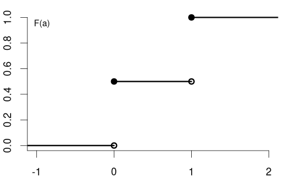
The CDF of the variable education could be:

and the CDF of the variable wage may have the following form:
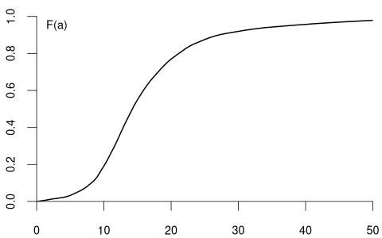
Notice the key difference: the CDF of a continuous random variable (like wage) is smooth, while the CDF of a discrete random variable (like coin and education) contains jumps and is flat between these jumps. The height of each jump corresponds to the probability of that specific value occurring.
Any function F(a) with the following properties defines a valid probability distribution:
Non-decreasing: F(a) \leq F(b) for a \leq b.
Reflects the monotonicity of probability when the event \{Y \leq a\} is contained in \{Y \leq b\} for a < b.Limits at 0 and 1: \displaystyle \lim_{a \to -\infty} F(a) = 0 and \displaystyle \lim_{a \to \infty} F(a) = 1.
Ensures the total probability equals 1 and impossible events have zero probability.Right-continuity: \displaystyle \lim_{\varepsilon \to 0, \varepsilon > 0} F(a + \varepsilon) = F(a).
Ensures P(Y \leq a) includes P(Y = a), which matters especially for discrete variables with jumps in the CDF.
By the basic rules of probability, we can compute the probability of any event of interest if we know the CDF F(a). Here are the most common calculations:
Probability Calculations Using the CDF (for a < b):
- P(Y \leq a) = F(a)
- P(Y > a) = 1 - F(a)
- P(Y < a) = F(a) - P(Y=a)
- P(Y \geq a) = 1 - P(Y < a)
- P(a < Y \leq b) = F(b) - F(a)
- P(a < Y < b) = F(b) - F(a) - P(Y=b)
- P(a \leq Y \leq b) = F(b) - F(a) + P(Y=a)
- P(a \leq Y < b) = F(b) - F(a)
The point probability P(Y = a) represents the size of the jump at a in the CDF F(a): P(Y=a) = F(a) - \lim_{\varepsilon \to 0, \varepsilon > 0} F(a-\varepsilon), which is the jump height at a. For continuous random variables, point probabilities are always zero, while for discrete random variables, they can be positive.
Here, \lim_{\varepsilon \to 0, \varepsilon > 0} F(a - \varepsilon) denotes the left limit at a while \lim_{\varepsilon \to 0, \varepsilon > 0} F(a+\varepsilon) denotes the right limit at a. When approaching any point from the left, the CDF can have a jump at that point, while when approaching from the right, the CDF cannot jump (due to right-continuity).
Let’s use our coin toss example to illustrate how to calculate different probabilities using the CDF in Equation 1.1:
- P(Y \leq 0.5) = F(0.5) = 0.5
- P(Y > 0.5) = 1 - F(0.5) = 1 - 0.5 = 0.5
- P(Y = 0) = F(0) - \lim_{\varepsilon \to 0, \varepsilon > 0} F(0-\varepsilon) = 0.5 - 0 = 0.5
- P(-1 < Y \leq 2) = F(2) - F(-1) = 1 - 0 = 1
1.6 Probability Mass Function
In the previous section, we defined the point probability P(Y = a) as the height of the jump in the CDF at point a. These point probabilities are systematically organized in the probability mass function:
Probability Mass Function (PMF)
The probability mass function (PMF) of a random variable Y is \pi(a) := P(Y = a), \quad a \in \mathbb R
The PMF of the coin variable is \pi(a) = P(Y=a) = \begin{cases} 0.5 & \text{if} \ a \in\{0,1\}, \\ 0 & \text{otherwise}. \end{cases}
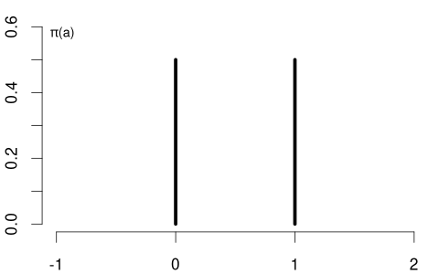
The education variable has the following PMF: \pi(a) = P(Y=a) = \begin{cases} 0.008 & \text{if} \ a = 4 \\ 0.055 & \text{if} \ a = 10 \\ 0.393 & \text{if} \ a = 12 \\ 0.079 & \text{if} \ a = 13 \\ 0.145 & \text{if} \ a = 14 \\ 0.078 & \text{if} \ a = 16 \\ 0.218 & \text{if} \ a = 18 \\ 0.024 & \text{if} \ a = 21 \\ 0 & \text{otherwise} \end{cases}
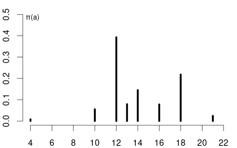
The support \mathcal Y of Y is the set of all values that Y can take with non-zero probability: \mathcal{Y} = \{ a \in \mathbb{R} : \pi(a) > 0 \}.
For the coin variable, the support is \mathcal{Y} = \{0, 1\}, while for the education variable, the support is \mathcal{Y} = \{4, 10, 12, 13, 14, 16, 18, 21\}.
Any valid PMF must satisfy the following properties:
- Non-negativity: \pi(a) \geq 0 for all a \in \mathbb{R}
- Sum to one: \sum_{a \in \mathcal{Y}} \pi(a) = 1
- Relationship to CDF: F(b) = \sum_{a \in \mathcal{Y}, a \leq b} \pi(a)
1.7 Probability Density Function
For continuous random variables, the CDF has no jumps, meaning the probability of any specific value is zero, and probability is distributed continuously over intervals. Unlike discrete random variables, which are characterized by both the PMF and the CDF, continuous variables do not have a positive PMF. Instead, they are described by the probability density function (PDF), which serves as the continuous analogue. If the CDF is differentiable, the PDF is given by its derivative:
Probability Density Function (PDF)
The probability density function (PDF) or simply density function of a continuous random variable Y is the derivative of its CDF: f(a) = \frac{d}{da} F(a).
Conversely, the CDF can be obtained from the PDF by integration: F(a) = \int_{-\infty}^a f(u) \ \text{d}u
Any function f(a) with the following properties defines a valid probability density function:
- Non-negativity: f(a) \geq 0 for all a \in \mathbb R
- Normalization: \int_{-\infty}^\infty f(u) \ \text{d}u = 1
The support of a continuous random variable Y with PDF f is the set \mathcal{Y} = \{a \in \mathbb{R} : f(a) > 0\}, which contains all values where the density is positive. For instance, the support of the wage variable is \mathcal{Y} = \{a \in \mathbb{R} : a \geq 0\}, reflecting that wages cannot be negative.
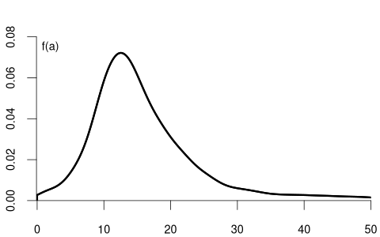
Basic Rules for Continuous Random Variables (with a \leq b):
- \displaystyle P(Y = a) = \int_a^a f(u) \ \text{d}u = 0
- \displaystyle P(Y \leq a) = P(Y < a) = F(a) = \int_{-\infty}^a f(u) \ \text{d}u
- \displaystyle P(Y > a) = P(Y \geq a) = 1 - F(a) = \int_a^\infty f(u) \ \text{d}u
- \displaystyle P(a < Y < b) = F(b) - F(a) = \int_a^b f(u) \ \text{d}u
- \displaystyle P(a < Y < b) = P(a < Y \leq b) = P(a \leq Y \leq b) = P(a \leq Y < b)
Unlike the PMF, which directly gives probabilities, the PDF does not represent probability directly. Instead, the probability is given by the area under the PDF curve over an interval. The PDF value f(a) itself can be greater than 1, as long as the total area under the curve equals 1.
It is important to note that for continuous random variables, the probability of any single point is zero. This is why, as shown in the last rule above, the inequalities (strict or non-strict) don’t affect the probability calculations for intervals. This stands in contrast to discrete random variables, where the inclusion of endpoints can change the probability value.
1.8 Conditional Distribution
The distribution of wage may differ between men and women. Similarly, the distribution of education may vary between married and unmarried individuals. In contrast, the distribution of a coin flip should remain the same regardless of whether the person tossing the coin earns 15 or 20 EUR per hour.
The conditional cumulative distribution function (CCDF), F_{Y|Z=b}(a) = F_{Y|Z}(a|b) = P(Y\leq a|Z=b), represents the distribution of a random variable Y given that another random variable Z takes a specific value b. It answers the question: “If we know that Z=b, what is the distribution of Y?”
For example, suppose that Y represents wage and Z represents education:
- F_{Y|Z=12}(a) is the CDF of wages among individuals with 12 years of education.
- F_{Y|Z=14}(a) is the CDF of wages among individuals with 14 years of education.
- F_{Y|Z=18}(a) is the CDF of wages among individuals with 18 years of education.
Since wage is a continuous variable, its conditional distribution given any specific value of another variable is also continuous. The conditional density of Y given Z=b is defined as the derivative of the conditional CDF: f_{Y|Z=b}(a) = f_{Y|Z}(a|b) = \frac{d}{d a} F_{Y|Z=b}(a).
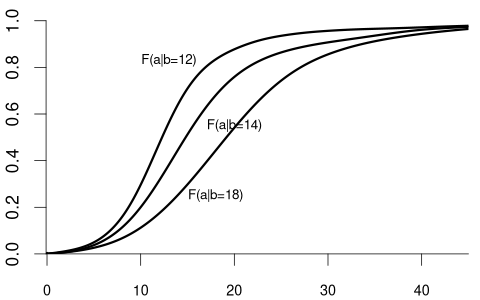

We observe that the distribution of wage varies across different levels of education. For example, individuals with fewer years of education are more likely to earn less than 20 EUR per hour: P(Y\leq 20 | Z=12) = F_{Y|Z=12}(20) > F_{Y|Z=18}(20) = P(Y\leq 20|Z = 18). Because the conditional distribution of Y given Z=b depends on the value of Z=b, we say that the random variables Y and Z are dependent random variables.
Note that the conditional CDF F_{Y|Z=b}(a) can only be defined for values of b in the support of Z.
We can also condition on more than one variable. Let Z_1 represent the labor market experience in years and Z_2 be the female dummy variable. The conditional CDF of Y given Z_1 = b and Z_2 = c is: F_{Y|Z_1=b,Z_2=c}(a) = F_{Y|Z_1,Z_2}(a|b,c) = P(Y \leq a|Z_1=b, Z_2=c).
For example:
- F_{Y|Z_1=10,Z_2=1}(a) is the CDF of wages among women with 10 years of experience.
- F_{Y|Z_1=10,Z_2=0}(a) is the CDF of wages among men with 10 years of experience.

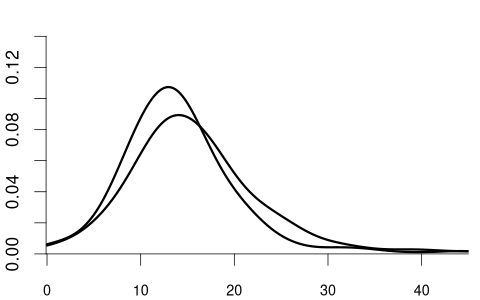
Clearly the random variable Y and the random vector (Z_1, Z_2) are dependent.
More generally, we can condition on the event that a k-variate random vector \boldsymbol Z = (Z_1, \ldots, Z_k)' takes the value \{\boldsymbol Z = \boldsymbol b\}, i.e., \{Z_1 = b_1, \ldots, Z_k = b_k\}. The conditional CDF of Y given \{\boldsymbol Z = \boldsymbol b\} is F_{Y|\boldsymbol Z = \boldsymbol b}(a) = F_{Y|Z_1 = b_1, \ldots, Z_k = b_k}(a).
The variable of interest, Y, can also be discrete. Then, any conditional CDF of Y is also discrete. Below is the conditional CDF of education given the married dummy variable:
- F_{Y|Z=0}(a) is the CDF of education among unmarried individuals.
- F_{Y|Z=1}(a) is the CDF of education among married individuals.
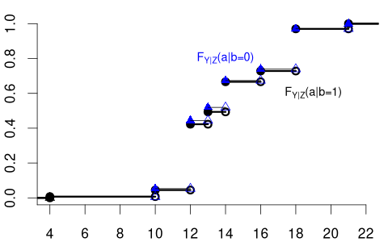
The conditional PMFs \pi_{Y|Z=0}(a) = P(Y = a | Z=0) and \pi_{Y|Z=1}(a)= P(Y = a | Z=1) indicate the jump heights of F_{Y|Z=0}(a) and F_{Y|Z=1}(a) at a.
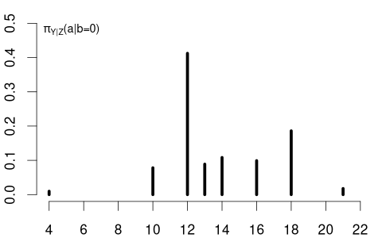
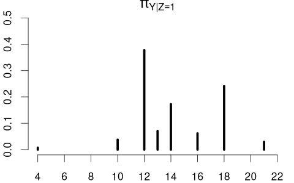
Clearly, education and married are dependent random variables. For example, \pi_{Y|Z=0}(12) > \pi_{Y|Z=1}(12) and \pi_{Y|Z=0}(18) < \pi_{Y|Z=1}(18).
In contrast, consider Y= coin flip and Z= married dummy variable. The CDF of a coin flip should be the same for married or unmarried individuals:
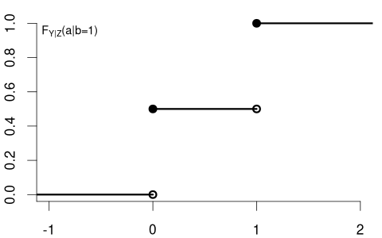
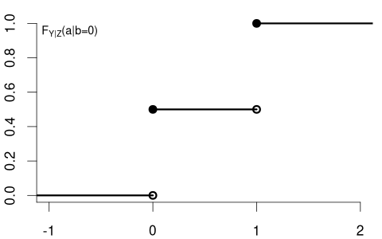
Because F_Y(a) = F_{Y|Z=0}(a) = F_{Y|Z=1}(a) \quad \text{for all} \ a we say that Y and Z are independent random variables.
1.9 Independence of Random Variables
In the previous section, we saw that the distribution of a coin flip remains the same regardless of a person’s marital status, illustrating the concept of independence. Let’s now formalize this important concept.
Independence
Y and Z are independent if and only if F_{Y|Z=b}(a) = F_{Y}(a) \quad \text{for all} \ a \ \text{and} \ b.
Note that if F_{Y|Z=b}(a) = F_{Y}(a) for all b, then automatically F_{Z|Y=a}(b) = F_{Z}(b) for all a. Due to this symmetry we can equivalently define independence through the property F_{Z|Y=a}(b) = F_{Z}(b).
Technical Note: More rigorously, the independence condition should state “for almost every b” rather than “for all b”. This means the condition must hold for every b in the support of Z, apart from a set of values that has probability 0 under Z. Put differently, the condition must hold for all b-values that Z can actually take, with exceptions allowed only on a set whose probability is 0. Think of it as “for all practical purposes”. For instance, we only need independence to hold for non-negative wages. We don’t need to check independence for negative wages since they can’t occur.
For discrete random variables, independence can be expressed using PMFs: Y and Z are independent if and only if \pi_{Y|Z=b}(a) = \pi_Y(a) for all a in the support of Y and all b in the support of Z. Similarly, for continuous random variables, independence means the conditional PDF factorizes f_{Y|Z=b}(a) = f_Y(a).
The definition naturally generalizes to Z_1, Z_2, Z_3. They are mutually independent if, for each i \in \{1,2,3\}, the conditional distribution of Z_i given the other two equals its marginal distribution. In CDF form, this means:
- F_{Z_1|Z_2=b_2, Z_3=b_3}(a) = F_{Z_1}(a)
- F_{Z_2|Z_1=b_1, Z_3=b_3}(a) = F_{Z_2}(a)
- F_{Z_3|Z_1=b_1, Z_2=b_2}(a) = F_{Z_3}(a)
for all a and for all (b_1, b_2, b_3). Here, we need all three conditions.
Mutual Independence
The random variables Z_1, \ldots, Z_n are mutually independent if and only if, for each i = 1,\dots,n, F_{Z_i | Z_1=b_1,\ldots,Z_{i-1}=b_{i-1},\,Z_{i+1}=b_{i+1},\ldots,Z_n=b_n}(a) = F_{Z_i}(a) for all a and all (b_1, \ldots, b_n).
An equivalent viewpoint uses the joint CDF of the vector \boldsymbol Z = (Z_1, \ldots, Z_n)', which is defined as: F_{\boldsymbol Z}(\boldsymbol a) = F_{Z_1, \ldots, Z_n}(a_1, \ldots, a_n) = P(Z_1 \leq a_1, \ldots, Z_n \leq a_n) = P(\boldsymbol Z \leq \boldsymbol a), where P(Z_1 \leq a_1, \ldots, Z_n \leq a_n) = P(\{Z_1 \leq a_1\} \cap \ldots \cap \{Z_n \leq a_n\}).
Then Z_1, \ldots, Z_n are mutually independent if and only if the joint CDF is the product of the marginal CDFs: F_{\boldsymbol Z}(\boldsymbol a) = F_{Z_1}(a_1) \cdots F_{Z_n}(a_n) \quad \text{for all} \ a_1, \ldots, a_n.
1.10 Independent and Identically Distributed
An important concept in statistics is that of an independent and identically distributed (i.i.d.) sample. This arises naturally when we consider multiple random variables that share the same distribution and do not influence each other.
i.i.d. Sample / Random Sample
A collection of random variables Y_1, \dots, Y_n is i.i.d. (independent and identically distributed) if:
They are mutually independent: for each i = 1,\dots,n, F_{Y_i | Y_1=b_1, \ldots, Y_{i-1}=b_{i-1}, Y_{i+1}=b_{i+1}, \ldots, Y_n = b_n}(a) = F_{Y_i}(a) for all a and all (b_1, \ldots, b_n).
They have the same distribution function: F_{Y_i}(a) = F(a) for all i=1,\ldots,n and all a.
For example, consider n coin flips, where each Y_i represents the outcome of the i-th flip (with Y_i=1 for heads and Y_i=0 for tails). If the coin is fair and the flips are performed independently, then Y_1, \ldots, Y_n form an i.i.d. sample with
F(a) = F_{Y_i}(a) = \begin{cases} 0 & a < 0 \\ 0.5 & 0 \leq a < 1 \\ 1 & a \geq 1 \end{cases} \qquad \text{for all} \ i=1, \ldots, n.
Similarly, if we randomly select n individuals from a large population and measure their wages, the resulting measurements Y_1, \ldots, Y_n can be treated as an i.i.d. sample. Each Y_i follows the same distribution (the wage distribution in the population), and knowledge of one person’s wage doesn’t affect the distribution of another’s. The function F is called the population distribution or the data-generating process (DGP).
1.11 Independence of Random Vectors
Often in practice, we work with multiple variables recorded for different individuals or time points. For example, consider two random vectors: \boldsymbol{X}_1 = (X_{11}, \ldots, X_{1k})', \quad \boldsymbol{X}_2 = (X_{21}, \ldots, X_{2k})'.
The conditional distribution function of \boldsymbol{X}_1 given that \boldsymbol{X}_2 takes the value \boldsymbol{b}=(b_1,\ldots,b_k)' is F_{\boldsymbol{X}_1 | \boldsymbol{X}_2 = \boldsymbol{b}}(\boldsymbol{a}) = P(\boldsymbol{X}_1 \le \boldsymbol{a}|\boldsymbol{X}_2 = \boldsymbol{b}), where the vector inequality \boldsymbol{X}_1 \le \boldsymbol{a} represents the intersection of component-wise inequalities, i.e., \{X_{11} \le a_1\} \cap \{X_{12} \le a_2\} \cap \cdots \cap \{X_{1k} \le a_k\}.
For instance, if \boldsymbol{X}_1 and \boldsymbol{X}_2 represent the survey answers of two different, randomly chosen people, then F_{\boldsymbol{X}_2 | \boldsymbol{X}_1=\boldsymbol{b}}(\boldsymbol{a}) describes the distribution of the second person’s answers, given that the first person’s answers are \boldsymbol{b}.
If the two people are truly randomly selected and unrelated to one another, we would not expect \boldsymbol{X}_2 to depend on whether \boldsymbol{X}_1 equals \boldsymbol{b} or some other value \boldsymbol{c}. In other words, knowing \boldsymbol X_1 provides no information that changes the distribution of \boldsymbol X_2.
Independence of Random Vectors
Two random vectors \boldsymbol{X}_1 and \boldsymbol{X}_2 are independent if and only if F_{\boldsymbol{X}_1 | \boldsymbol{X}_2 = \boldsymbol{b}}(\boldsymbol{a}) = F_{\boldsymbol{X}_1}(\boldsymbol{a}) \quad \text{for all } \boldsymbol{a} \ \text{and} \ \boldsymbol{b}.
This definition extends naturally to mutual independence of n random vectors \boldsymbol{X}_1,\dots,\boldsymbol{X}_n, where \boldsymbol{X}_i = (X_{i1},\dots,X_{ik})'. They are called mutually independent if, for each i = 1,\dots,n, F_{\boldsymbol X_i| \boldsymbol X_1=\boldsymbol b_1, \ldots, \boldsymbol X_{i-1}=\boldsymbol b_{i-1}, \boldsymbol X_{i+1}=\boldsymbol b_{i+1}, \ldots, \boldsymbol X_n = \boldsymbol b_n}(\boldsymbol a) = F_{\boldsymbol X_i}(\boldsymbol a) for all \boldsymbol{a} and all (\boldsymbol{b}_1,\dots,\boldsymbol{b}_n).
Hence, in an independent sample, what the i-th randomly chosen person answers does not depend on anyone else’s answers.
i.i.d. Sample of Random Vectors
The concept of i.i.d. samples naturally extends to random vectors. A collection of random vectors \boldsymbol{X}_1, \dots, \boldsymbol{X}_n is i.i.d. if they are mutually independent and have the same distribution function F. Formally, F_{\boldsymbol X_i| \boldsymbol X_1=\boldsymbol b_1, \ldots, \boldsymbol X_{i-1}=\boldsymbol b_{i-1}, \boldsymbol X_{i+1}=\boldsymbol b_{i+1}, \ldots, \boldsymbol X_n = \boldsymbol b_n}(\boldsymbol a) = F(\boldsymbol a) for all i=1, \ldots, n, for all \boldsymbol{a}, and all (\boldsymbol{b}_1,\dots,\boldsymbol{b}_n).
An i.i.d. dataset (or random sample) is one where each multivariate observation not only comes from the same population distribution F but is independent of the others.